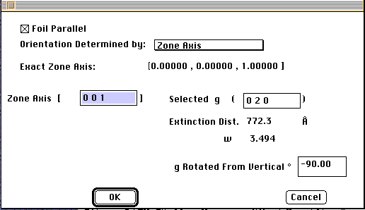
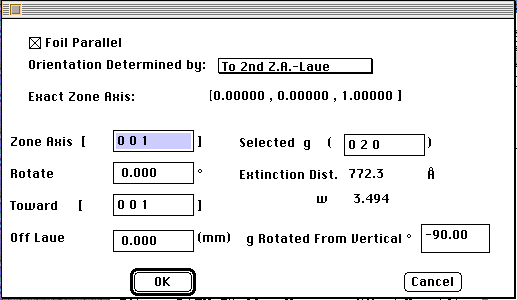
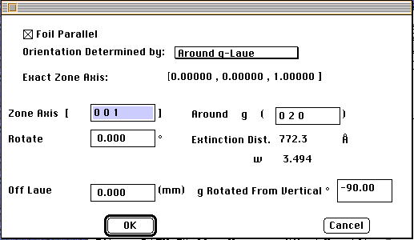
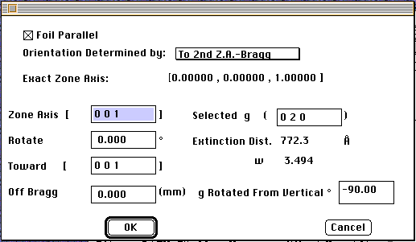
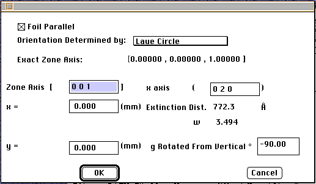

Distributed By: Virtual Labs
Beam Orientation Dialog Box:
PATH...Parameter Menu:Beam Orientation
The Beam Orientation Dialog Box allows the current base
crystal to be oriented with respect to the particle beam and indirectly
the computer screen. Desktop Microscopist now offers a selection of 7 different
methods to achieve accurate orientation of the crystal.
- (1)The user can orient the crystal with the beam parallel to a specified
zone axis.
- (2)Orient the Crystal with a Plane parallel to the computer screen.
- (3-4) Orient the Crystal by rotating the crystal toward a given zone
axis with the ability to specify perpendicular tilts off the tilt
direction. The size of the rotation off of the tilt direction is specified
in mm and corresponds to the amount the Kikuchi Band would be moved from
either the Laue condition
or the Bragg condition in a diffraction pattern taken with the current
beam wavelength and camera length.
(5-6) Orient the Crystal by rotating the crystal around a given g-vector
with the ability to specify perpendicular tilts off the tilt
direction. The size of the rotation off of the tilt direction is specified
in mm and corresponds to the amount the Kikuchi Band would be moved from
either the Laue condition
or the Bragg condition in a diffraction pattern taken with the current
beam wavelength and camera length.
(7) Orient the Crystal with respect to the Laue
Circle, this method is explained in Microdiffraction
by Spence and Zuo.The only diffrence is that dimensions are given in
mm corresponding to distances on a micrograph at a given wavelength and
camera length as opposed to fraction of g-vectors.
In general, to completely define the orientation of a crystal, the orientation
with respect to the beam must be defined and then the orientation of a crystal
with respect to as direction perpendicular to the beam.
For the user to exactly define an orientation, Desktop Microscopist uses
the direction vertical upward to the computer screen, assuming the excited
beam is perpendicular to the screen. The user must select a g-vector in
the plane of the screen. This g-vector rotated with respect to screen vertical
with positive rotation anti-clockwise is given in degrees.

Beam Orientation Dialog Box Set-Up For Down Zone Axis.
(Note: If the g-vector is not orhogonal to the Zone Axis, it is not used
to set rotation about the Zone)

Beam Orientation Dialog Box Set-Up For Rotation Towards A Pole
Some users may prefer to set a particular off-axis orientation by considering
the pole towards which they are rotating, since it is obvious the direction
of rotation.

Beam Orientation Dialog Box Set-Up For Rotation Around A g-vector
For rotations around a g-vector the rotation direction is determined
using the right hand rule for positive rotations and the left hand rule
for negative rotations.

These Dialog Boxes Are Similar to The Laue Situation Only 0,0 is at Bragg.

The Laue Circle Methodology uses the center of the laue circle as point
x,y. The origin being the beam center. The value x in this case is given
in millimeters determined from the experimental micrograph and it is the
value along the indicated x axis. The y axis is then determined by the
right hand rule, x axis into the zone axis with the zone axis coming out
of the screen.
Author: J.ames T.
Stanley
 Desktop
Manual:Dialog Boxes
Desktop
Manual:Dialog Boxes
Distributed By: Virtual Labs
Last Updated:1/12/96 Sat, Apr 27, 1996